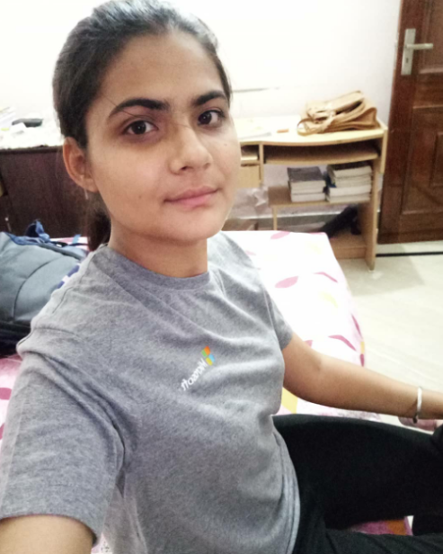

| AKASHDEEP KAUR CONTACT NO.:89685-65065 EMAIL- aksangha2@gmail.com |
 | ||||||||||||||
|---|---|---|---|---|---|---|---|---|---|---|---|---|---|---|---|
| Institute | Year | Course | CGPA/%age |
|---|---|---|---|
| Dr. B.R. Ambedkar National Institute of Technology ,Jalandhar | Present | Bachelor of Technology(ECE) | 9.01/10 |
| MGN Public School, Kapurthala | 2016 | Higher Secondary Education(CBSE) | 94/100 |
| Christ The King Convent School, Kapurthala | 2014 | Secondary Education(ICSE) | 90.2/100 |
| Movie Rating Prediction System (Machine Learning) |
Frameworks Used-Jupyter Notebook,Python,ML libraries,NLTK |
AUG’19-SEPT’19 |
| Face Detection and Recognition (Python and ML) |
|
JUNE’19-JULY’19 |
| Certifications |
|
JULY’19 JULY’17 OCT’14 |
| Academics & Contests |
|
2019 2017 2016 2010- 2014 |
| References |
Dr. Indu Saini Assistant Professor Department of Electronics and Communication Engineering,NIT Jalandhar 98769-50214 Email:sainii@nitj.ac.in Pooja Malik Support Engineer,Directory Services,Microsoft 96634-07700 Email:V-pomali@microsoft.com |
| Technical Skills:C/C++, Data Structures and Algorithms,Machine Learning,Neural Networks,HTML, SQL,Basic Python,Basic NLP |
| Operating Systems:Windows |